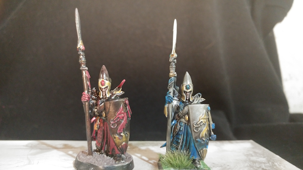

About Me
Hi, I’m Elliot Runions, a highschool student enrolled in the PTEC software development program. I grew up in Winnipeg, and I go to Oak park highschool and MITT for schooling.
My Interest in Technology
I’ve been interested in technology for the majority of my life, and I wanted to know how games were made and make my own. I enjoy playing games too, and some of my favourites are Subnautica, Terraria, and Risk of Rain. I’ve made a few games with unity, which you can find at https://itch.io/profile/erunions. I also enjoy making pixel art, and have been doing that for some time.

My Hobbies
Outside of technology, I enjoy board games and tabletop rpgs, specifically Dungeons & Dragons. While I enjoy the game very much, I really find myself drawn to the hobby of painting miniatures and making terrain. I’ve bought and painted many minis, and I'm starting to get more experienced at making terrain for my D&D games.
